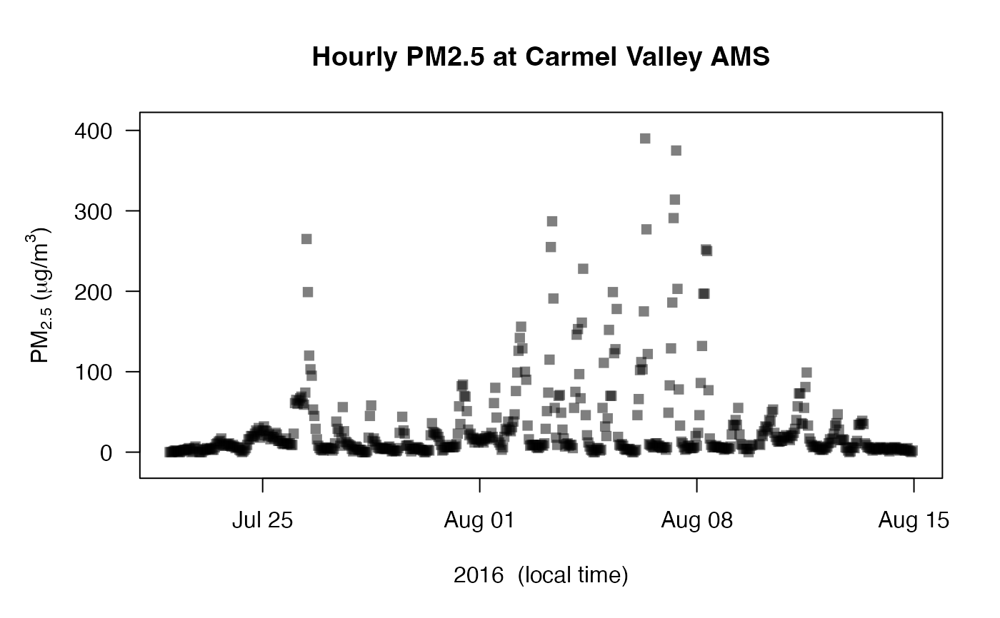
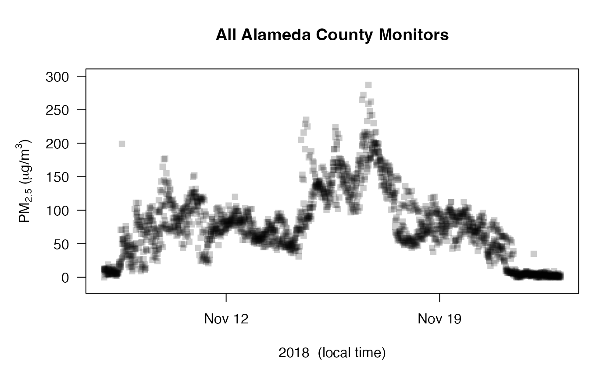
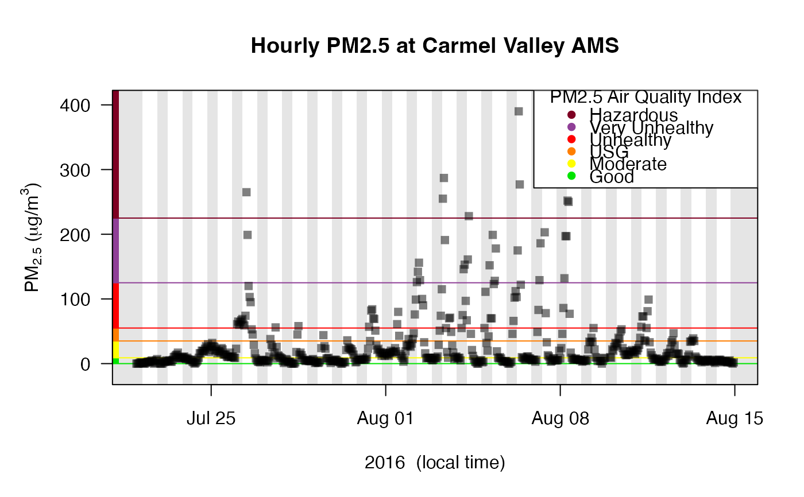

Creates a time series plot of data from a mts_monitor object. By default, points are plotted as semi-transparent squares. All data values are plotted from all monitors found in the mts_monitor object.
Reasonable defaults are chosen for annotations and plot characteristics.
Users can override any defaults by passing in parameters accepted by
graphics::plot.default.
monitor_timeseriesPlot( monitor = NULL, id = NULL, shadedNight = FALSE, add = FALSE, addAQI = FALSE, palette = c("EPA", "subdued", "deuteranopia"), opacity = NULL, ... )
Arguments
| monitor | mts_monitor object. |
|---|---|
| id |
|
| shadedNight | Logical specifying whether to add nighttime shading. |
| add | Logical specifying whether to add to the current plot. |
| addAQI | Logical specifying whether to add visual AQI decorations. |
| palette | Named color palette to use when adding AQI decorations. |
| opacity | Opacity to use for points. By default, an opacity is chosen based on the number of points so that trends are highlighted while outliers diminish in visual importance as the number of points increases. |
| ... | Additional arguments to be passed to |
Examples
# Multiple monitors Camp_Fire %>% monitor_filter(countyName == "Alameda") %>% monitor_timeseriesPlot(main = "All Alameda County Monitors")# Standard extras Carmel_Valley %>% monitor_timeseriesPlot( shadedNight = TRUE, addAQI = TRUE )# Fancy plot based on pm2.5 values pm2.5 <- Carmel_Valley$data[,2] Carmel_Valley %>% monitor_timeseriesPlot( shadedNight = TRUE, pch = 16, cex = pmax(pm2.5 / 100, 0.5), col = aqiColors(pm2.5), opacity = 0.8 )